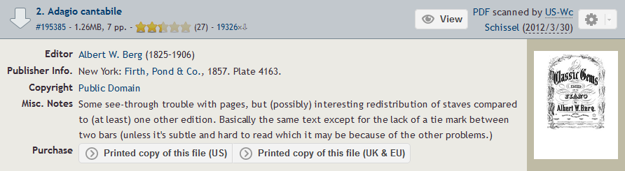
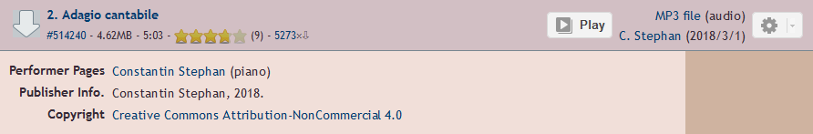
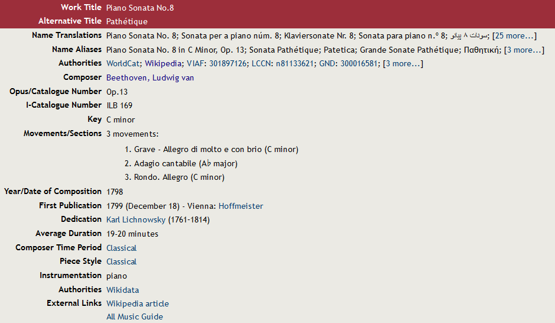

Task 1 - Cloning the Respository
For this task I followed the steps provided to setup my github repository
Task 2 - Dataset Theme
The Dataset
I have chosen to base my dataset around some of the works of the classical and romantic composer Ludwig van Beethoven. For the current task I have chosen to use his piano sonata No.8 in C minor, Op.13, also known as the "pathetique sonata". Specifically, the second movement "Adagio Cantabile".
I chose to focus on this because it's one of my favourite sonatas of all time, especially the beautiful but haunting second movement. It's also one of the first pieces I taught myself after finishing my classical piano training, so it holds a special place in my heart.
Notated Data
Being a very old and famous piece of music, there are numerous notated representations of the data available online and in books. The one I have chosen for this task was obtained from the International Music Score Library Project and originally published in "Firth, Pond & Co." in 1857.
Audio Data
Just as there are many notated representations of the piece, so too are there many auditory representations. For simplicity I sourced the audio recording, a performance by Constantin Stephan, from the same location as the score.
Descriptive Data
Obtaining metadata for my chosen theme wasn't quite as straightforward. The IMSLP website for the piece does contain a lot of metadata, but this pertains to the entire sonata and not the specific movement I'm analysing. Regardless of this it is still useful but needs to be suplimented for it to be all-encompasing.
All data accessed here
Task 3 - Challenges when Working with Music Data
From my experience I think the challenges you face when working with music data heavily depend on the music you are working with. For my theme, finding data is not difficult at all due to the prevelance and age of the piece, for a newer or more niche piece of music I could imagine this being very difficult by contrast.
Also luckily in my case, some of the data is old enough that it falls under public domain, like the score I'm using. My audio however is under the "CC BY-NC" license meaning I must credit the owner whenever I use it and can't use it for commercial purposes.
My data does provide a potential challenge in its age however. As the score is very old it may be hard for software to parse it.